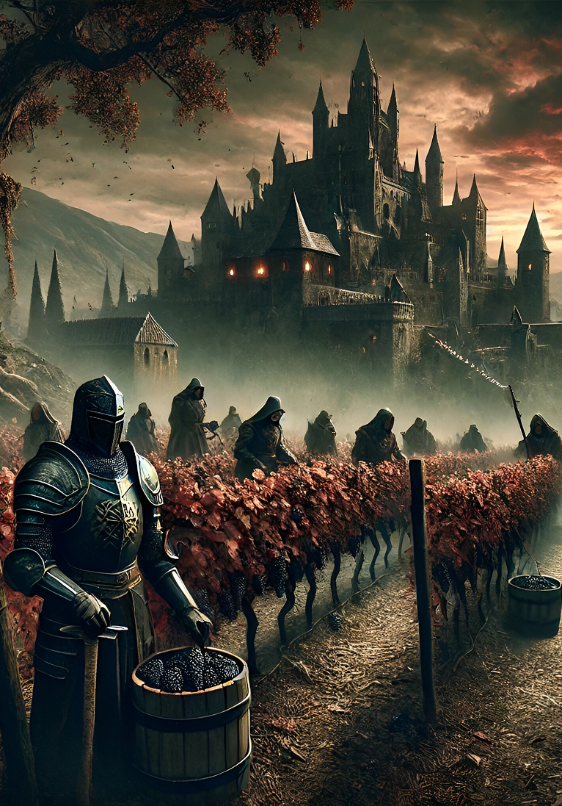
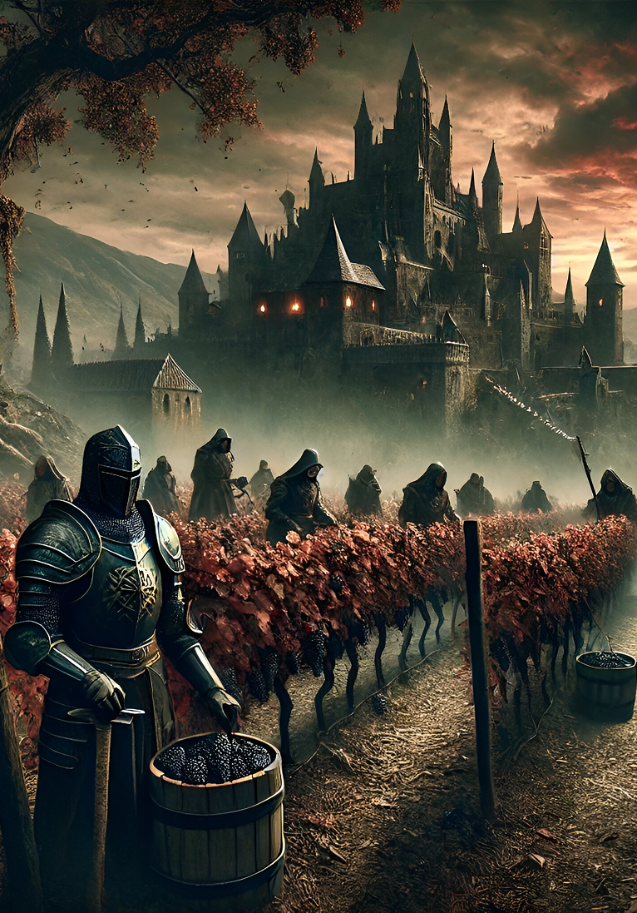

At Vintage Vault, we are passionate about the art of fine, aged wines. Established in the heart of [Your Location] in [Year], we have dedicated ourselves to curating a collection of the rarest and most exquisite vintages from across the world. Our selection spans centuries, celebrating the craftsmanship and heritage of winemaking.
Whether it’s a centuries-old Bordeaux, a forgotten gem from the cellars of Burgundy, or a legendary Italian vintage, our mission is to bring history to life—one sip at a time.
More than just a shop, Vintage Vault is a haven for collectors, connoisseurs, and those who appreciate the finer things in life. Step inside and experience the rich aroma of time-honored tradition, the elegance of well-aged wines, and the warmth of a community that shares your passion.
Vintage Vault Event Calendars
EVENTS
Wine Auctions
Bid on exclusive vintages and add legendary bottles to your collection.
Wine Tastings
Discover rare, aged wines with guided tastings from our expert sommeliers.
Music Nights
Live music, fine wine, and great company—an evening of pure indulgence.
Private Events
Host your own gathering in a refined setting with exceptional wines.
Wines
Welsh Brothers Madeira, 1779
Madeira Verdelho The oldest known Welsh Bros. Madeira. The Welsh family coat of arms is stamped on the wax seal. Welsh Bros. established in 1794 and were the largest shipper of Madeira wine before the odium outbreak in 1852. They were important suppliers to the Russian and the Swedish courts. In 1893 John F. Welsh was appointed the Russian Consul. In the second part of the 19th century, Welsh Bros. focussed on shipping high quality bottled wines to the United States. They were known to mature their wines in "estufas do sol" rather than artificially heated estufas. Welsh Bros. co-founded the Madeira Wine Company in 1913. …
Sandeman, 1896
This exceptional vintage represents one of the finest expressions of late 19th-century Port winemaking. Despite its age, the wine has retained a remarkable depth of character, showcasing rich layers of dried fruits, figs, and warming spice notes. The re-corking in 1975 helped preserve its integrity, allowing the nuanced complexity to evolve gracefully. Perfect for collectors or connoisseurs, it offers a rare glimpse into the craftsmanship of historic Douro estates and the enduring elegance of aged Port.
RT Madeira, 1789
Vintage Madeira
Provenance from Christies. Some early 19th century bottles are found branded Rufino Teixeira and this is relative to the RT on this bottle. Teixeira is an old Madeira family, Tristão Vaz Teixeira being one of the first to discover the Island in the 15th century (in 1419, 600 years ago!) In January 2019 we received the following email. "Regarding the bottle of Madeira Wine "RT 1789" on sale, would like to inform you as follows; The wine is Sercial and the bottle was painted by my grandfather, which was a Madeira Wine exporter around the year 1910. The RT wine comes from my great-great-grandfather and RT means "Rufino Teixeira". …
Napolean Cognac, 1812
This is a large bottle of 1812 Napoleon Cognac. No size is stated on the bottle but it is similar to a Magnum. Bottle comes presented in its original wooden case.
A truly historic spirit, this 1812 Cognac is believed to have been produced during the Napoleonic era, making it an extraordinary artifact for collectors and enthusiasts alike. The spirit within has aged gracefully, offering rich, velvety notes of dried fruit, old leather, and spiced oak. Its unique packaging and exceptional provenance make it not just a drink, but a tangible link to a bygone century of craftsmanship and prestige.
The Macallan, 1937
Pure Highland Malt Scotch Whisky. Bottled in Scotland.
This rare expression from 1937 is a true collector’s gem, representing the timeless craftsmanship of The Macallan distillery. Distilled during a historically significant era, this bottle carries the deep complexity and rich character that The Macallan is renowned for. Expect notes of antique oak, dried fruits, subtle smoke, and a touch of sherry sweetness. Its elegant maturity and exceptional preservation make it not only a luxurious dram but also a piece of Scotch whisky history.
Niepoort Port, 1945
Vintage Port
A rare example of the Niepoort 1945 Vintage. Rated 97 points from the Wine Spectator (in 1990)… 'Another Port shipper once mistook this extraordinary wine for one 15 years younger. It is very youthful, with caressing sweet fruit flavors. Medium garnet with a ruby center, blackberry, black pepper and smoke aromas, medium-bodied, with sweet blackberry.' Voted as the best of the Niepoort vintages by thePortForum.com - Review: 60% opaque, red. Wonderful mature VP, still with structure. Mint and cherry, though fruit fading. Fabulous. Widely acclaimed, and overwhelmingly voted, wine of the night
Fonseca Port, 1927
Vintage Port, DOC Douro Very Top shoulder Slightly bin soiled label
Review by AHB - Portforum.com "A lovely rich red colour, warm and dark; 90% opaque. Showing little on the nose, but the little it is showing is warm and fruity — and very nice. A beautiful palate, soft entry with poise and balance. The fruit is generous, sweet and ripe and still plentiful. The palate is big and rich; stunning for a port of this age. The aftertaste is amazing — so full of fruit, of rich burnt fruitcake; mouthfilling and immense. This is stunning, stunning port.". 48 hours later a 6cl sample bottle was tasted which showed even mor ecomplexity, being sweeter and rounder than the pop 'n' pour version. …
Quinta do Noval Nacional, 1963
Noval Nacional Level in Neck- Good Label ***99/100 - Robert Parker***
Noval is particularly famous for its Nacional, a Port produced in some years only from a 2 hectare parcel at the heart of the Noval vineyard where ungrafted pre phylloxera vines survive. "Last July I enjoyed this "legend" at Noval and consumed my share of an entire bottle that was opened for our small group of Port journalists. This VP had a very dark ruby color and was clearly from a perfectly stored bottle. The 1963 is as lithe and graceful as a trapeze artist, and showed what perfection in balance is all about. It is not easy for Port to get much better than this. Sweet, spicy, grapey, mint, big, bold, brash are all apt descriptors. …
Unknown Port, 1887
An extremely rare 19th-century unidentified vintage port from 1887.
Shrouded in mystery, this vintage Port stands as a remarkable relic of the 1800s. While the shipper remains unknown, the wine itself tells a story of heritage and age. Its deep garnet hue and complex bouquet of stewed berries, dried figs, and aged wood speak to its exceptional longevity. Bottled over a century ago, it is a rare survivor of time—an evocative piece for collectors and a unique tasting experience for connoisseurs of vintage fortified wines.
Chateau Lafite Rothschild, 1923
Pauillac Grand Cru Classe very high shoulder, Bordeaux
The Chateau Lafite from the good 1923 vintage, has delicacy, charm, subtlety, length and perfect weight. Château Lafite Rothschild, situated in the Pauillac appellation of Bordeaux, France, stands as one of the most illustrious wine estates globally, revered for its storied history and exceptional red wines. With a lineage tracing back to the 17th century, the estate's vineyards cover approximately 112 hectares, predominantly planted with Cabernet Sauvignon, Merlot, Cabernet Franc, and Petit Verdot grapes. Benefitting from gravelly soils and a maritime climate, Château Lafite Rothschild crafts wines that epitomize the elegance and complexity of Pauillac terroir. …
J.S. Madeira, 1805
Terrentez 1805 Recorked by OP Brothers 2015.
These bottles are part of a collection discovered by OP Brothers (Oleg and Pedro) in São Vicente. The original bottles were in poor condition, so the contents were placed in a demijohn whilst the bottles were cleaned. The wine was rebottled, recorked and rewaxed. Released at auction: Christies in 2019 more >>>
Cognac Ehrman & Ehrman, 1900
A very rare MAGNUM format of Grande Champagne Cognac from the turn of the century.
This extraordinary bottle hails from the prestigious Grande Champagne cru, the heart of Cognac's finest terroir. Distilled over a century ago, it offers a deep, golden amber hue and an aromatic profile rich with notes of rancio, candied orange peel, old oak, and spiced vanilla. Its magnum format not only enhances aging potential but also adds to its rarity. A collector’s dream and a connoisseur’s delight, this Cognac is a timeless expression of artisanal excellence.
 
